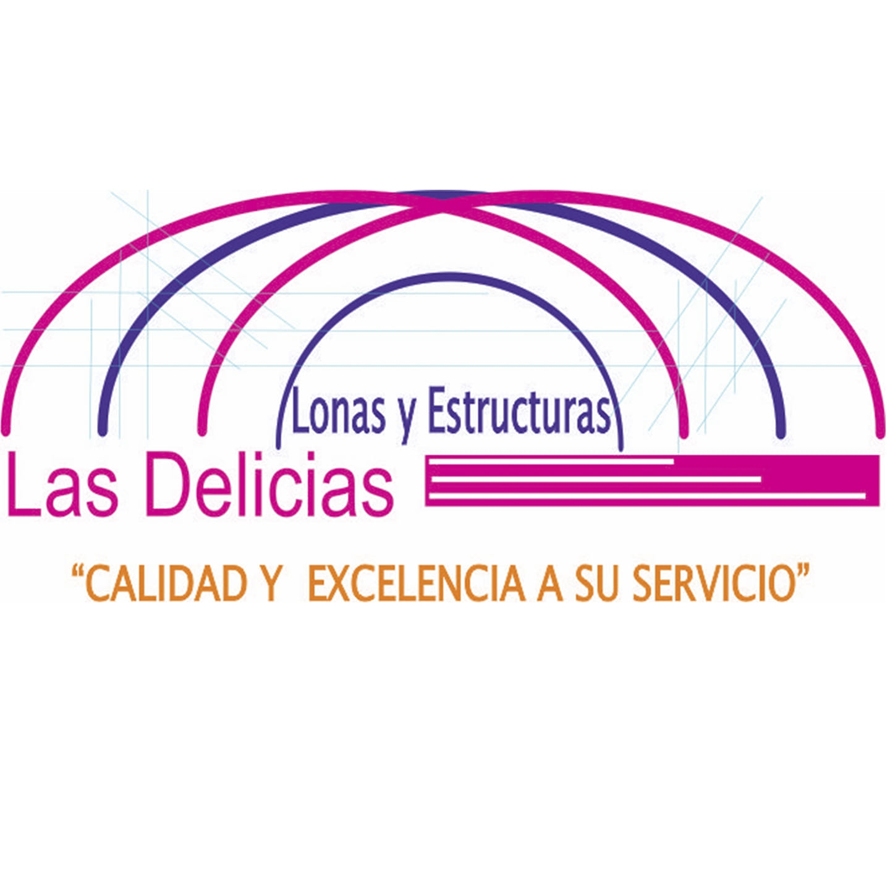

Servicios
Estamos listos para que tu evento sea el mejor, con nuestro servicio de renta y venta de: Domo articulado a medio punto, Naves a dos aguas, Stands de melamina, Gradas, Vallas metálicas, Tarimas, Templetes y Mobiliario.
Nave a dos Aguas.
Carpas.
Stands de Melamina.
Vallas Metalicas.
Tarimas.
Templetes.
Gradas.
Mobiliario.
Nuestra Experiencia
Lonas y Estructuras "Las Delicias" es una empresa con mas de 20 años ofresiendo servicios inovadores y de alta calidad, trabajando con Municipios, Gobiernos Estatales y el Gobierno Federal, ademas de trabajar con la Iniciativa privada, siempre a la altura de los eventos en los cuales participamos. Eventos como: Artisticos, Religiosos, Civiles, Festibales, Carnavales, etc., con presencia en toda la republica Mexicana.

¿Quienes Somos?
Somos una empresa orgullosamente mexicana, fundada en el año de 1998, especializada en el alquiler de infraestructura y mobiliario para eventos sociales,
políticos, religiosos, etc. La calidad y excelencia en nuestros servicios han servido para recomendarnos como una empresa responsable, de confianza y eficaz; siempre manteniéndonos a la vanguardia y al tanto de las necesidades de nuestros clientes.
Actualmente Lonas y Estructuras Las Delicias es la empresa líder en el mercado, ejecutando proyectos en toda la república Mexicana;
participando en Carnavales, Ferias, Expos, Renta de Carpas a producciones de Cine, Eventos Privados, Eventos Religiosos y Eventos Turísticos; trabajando con Municipios,
Gobiernos Estatales, Gobierno Federal y la Iniciativa Privada, además de siempre ofrecer la mejor solución para cada cliente.
Tambien contamos con personal altamente capacitado para garantizar la integridad y seguridad en todos los trabajos que realizamos,
mantenimientos programadosde nuestras estructuras, y de una flotilla de veiculos de carga que nos permite cumplir con todas nuestras tareas.
Misión:
Lonas y Estructuras “Las Delicias” ofrece servicios, innovadores, de alta calidad, instalando con estricta supervisión para satisfacer el gusto de nuestros clientes más exigentes, brindando un excelente servicio en un ambiente seguro, agradable y familiar a un precio justo.
Visión:
Ser líderes a nivel regional y nacional, siendo reconocidos como un grupo de trabajo original, sólido y profesional, con calidad humana y principios éticos, que ofrece servicios de excelencia a nuestros clientes.
Objetivo general:
Mantenernos en la preferencia del mercado, incrementar el volumen de ventas, brindando a nuestros clientes servicios de la más alta calidad, innovando de tal manera que satisfagan el gusto de nuestros consumidores.
Lonas y Extructuras "Las Delicias"
Renta de Lonas, Renta de Domos, Renta de Estructuras, Renta de Nave, Renta de Carpas, Renta de Vallas metalicas, Renta de tarimas, Renta de templetes, Renta de Mobiliario.
